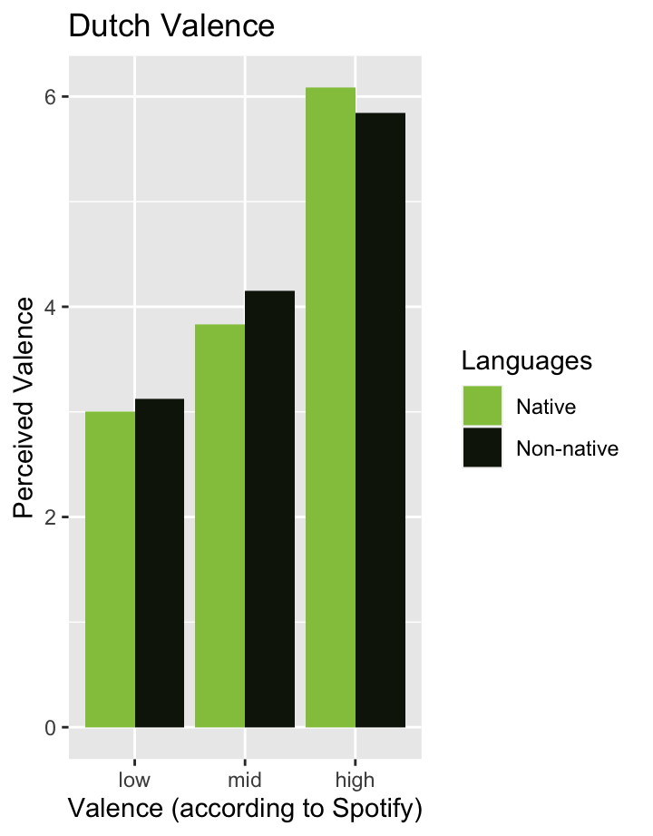
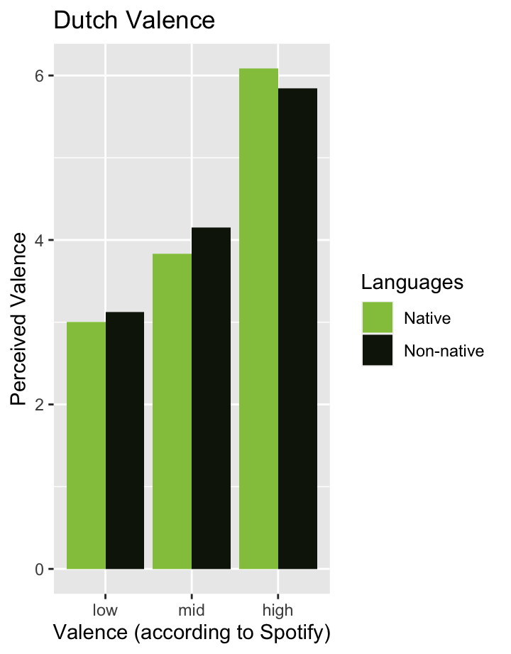

Main results


 

103
18
12
Listen to the following songs:
A Hindi song with low valence:
A Dutch song with mid valence:
A Mandarin song with high valence:
Did you notice the differences in happiness between the songs? Did you enjoy the songs whether you can understand the language or not? we looked into whether the perceived happiness (or valence) level differs between a foreign language and ones native language. This was done by asking questions like:
Did you enjoy listening to this song?
How happy or sad did this song make you feel?
Did you already know this song before listening?
How differently do people perceive songs in a non-native language compared to songs in their native language? A recent study led by Lee et al.(2021) provides some insights into this question.
Putting their focus on mood perception in music specifically, Lee et al.(2021) examined three research questions in their study: first, to what extent people with different cultural backgrounds perceive mood in music differently; second, to what extent people within and between cultures agree on their perception of mood in music; and third, to what extent mood detection algorithms in Music Information Retrieval (MIR) accurately reflect human judgement, and whether a cultural bias can be found in the algorithm.
As an attempt to answer the research questions, the researchers analyzed three independent pools of participants from three countries (namely Brazil, South Korea and the US) that speak three different languages (namely Portuguese, Korean and English). The researchers explanation for selecting these populations is simple but rather convincing - there is evidence indicating that unique clusters in the West, Asia, and Latin America are formed due to shared music interests (notice how this is consistent with the top three globally most streamed artists on Spotify as well!).
The researchers choice of manually compiling a novel dataset of pop songs as experiment stimuli is refreshing, as most previous research (e.g.Eerola & Vuoskoski, 2011) utilized musical pieces that are known to evoke specific emotions. This makes the experiment setting feel more similar to real-world experiences, improving the external validity of the research findings.
A key finding suggests that emotions in pop songs may be universally recognizable to audiences regardless of cultural background, even when the song is unfamiliar. This statement was inferred based on the finding that listeners within and across cultures highly agreed on the presence of mood attributes such as danceable, energy, sad, cheerful and electronic in songs.
Another interesting result is the researchers conclusion that there is no cultural bias in the algorithms of Spotify API. Initially, the researchers hypothesized that the algorithm that was developed in the West would align better with participants in the US; however, statistical analyses revealed that there were no significant differences between the algorithms judgement and those of participants across cultures. Although this finding seems promising at first glance, the researchers arguments may not be robust enough to make such a conclusion, especially since the study did not include other cultures such as the African cultures and other Asian cultures.
| Title | Artist | Language | Valence |
|---|---|---|---|
| Kuan Shu | Y2j | Mandarin | 0.206 |
| Respect | Tino Martin | Dutch | 0.206 |
| Dont look back in anger | Oasis | English | 0.206 |
| Jagga Jiteya | Daler Mehndi, Dee MC, Shashwat Sachdev | Hindi | 0.206 |
| Ai De Jiu Shi Ni | Leehom Wang | Mandarin | 0.571 |
| Treur niet (Ode aan het leven) | Diggy Dex, JW Roy | Dutch | 0.571 |
| Maybe tomorrow | Stereophonics | English | 0.571 |
| Shubhaarambh | Amit Trivedi, Shruti Pathak, Divya Kumar | Hindi | 0.571 |
| Mojito | Jay Chou | Mandarin | 0.800 |
| Leef nu het kan | Jan Smit | Dutch | 0.802 |
| Walk of life | Dire Straits | English | 0.802 |
| Mummy Nu Pasand (From Jai Mummy Di) | Sunanda Sharma, Tanishjk Bagchi | Hindi | 0.802 |
| Question | Scale |
|---|---|
| What is your age in years? e.g.22 | Years |
| What gender do you identify the most with? | M/F/N-B/Other |
| What country are you from? | List of Countries |
| What is the highest level of education that you have completed? | Selected Choice |
| How fluent are you in Dutch/English/Hindi/Mandarin | No proficiency- Native proficiency |
| How often do you listen to music in a non-native language? | Never - Always |
| Question | Scale |
|---|---|
| How much did you enjoy listening to the song? | Not at all - A great deal |
| How would you describe the song that you have just heard? | Sad - Happy |
| How familiar are you with this song? | Not familiar at all - Extremely familiar |
While the spotify API provides its information in decimal points, due to a difficulty in direct comparison between Valence points by spotify and a scale rating by users, we decided to select tracks with the same valence points, and compare them to each other.
Moreover, due to happiness being subjective, based on past personal experiences, we needed to account for a lack of objectivity within our results.
Furthermore, we did not take into account the fact that a lot of Indian audiences consider their native language to be English instead of Hindi. This also resulted in a lower amount of participants with Hindi as a native language as compared to the English native speakers specifically.


In order to give some insight about the experiment, both graphs on the left provide some basic information about the 103 participants.
The pie chart is a distribution of participants who have at least full professional proficiency in the languages tested in the experiment.
Note. Bilingual participants were counted multiple times. Participants in Other did not have at least full professional proficiency in any of the languages.
The histogram shows the distribution of the participants in terms of age and gender. Most participants were female followed by males then non-binary and, lastly, there was one person categorised as other. The participants were on average X years old and high school graduates.
Valence is a rating that is given by sound engineers at Spotify which measures the positiveness of a song. High valence values indicate that a song is happier in nature, while now valence indicates sadder songs. To measure the happiness of a song, spotify data scientists have an agreed upon metric of what happy music sounds like. However according to Spotify a large amount of this measurement is also done by AI technology; therefore making it unclear exactly what the indicators of a happy song are. Spotify issues a measurement of valence in a decimal system, with values between 0 to 1 going up to three decimal points.
Psychologists on the other hand measure valence as the probability of a thing making people experience positive emotions.
On the right, the total perceived valence can be seen. It seems that in general:
Participants mostly agreed on the perceived valence in songs regardless of language
Hindi songs were consistently rated high in perceived valence regardless of its assigned numerical rating on Spotify
People find it difficult to differentiate between sad and neutral songs, they seem to only be aware of above average levels of happiness in songs regardless of language
The last four plots on the right show the perceived valences of native speakers compared to those of non-native speakers. It seems that in general:
With the exception of Hindi songs, native speakers and non-native speakers did not differ much in their perceptions of valence in songs
Native Hindi speakers were less accurate than non-native speakers in perceiving the valence in Hindi songs according to Spotify API
Participants were better able to perceive the valence in Dutch and Mandarin songs (according to SPotify API) than Hindi and English songs, regardless of whether the songs were performed in their native language or not


The graph on the right shows that there is a slight correlation between the familiarity and the enjoyability of a song; the more familiar the more enjoyable. Furthermore, it appears that the Dutch songs were the least familiar among our participants. All Dutch and Hindi songs were found to be the least enjoyable, despite the differences in valence. It is remarkable that the Mandarin songs are almost as familiar and enjoyable as the English songs. This might be due to the fact that Mandarin is often perceived as a softer and therefore more pleasant language. Less surprising is the fact that the English songs were the most familiar and the most enjoyed, since all participants could speak English to at least some degree considering that the survey was written in English. However, it is interesting to see that the English song with the lowest valence was the most enjoyed, which could be explained by its high familiarity, since the perceived valence was low (see valence results).
There is still room for improvement and therefore we will discuss some directions for future research based on the findings in this report. Firstly, the participants were asked to rate the songs on a happiness scale instead of valence, which means that the results might be biased (low valence songs were sometimes rated the same as mid valence). Moreover, there might have been other kinds of biases which could be avoided in future research.
Something that was beyond the scope of our project is the comparison of western and non-western songs directly (Dutch/English - Hindi/Mandarin). Does one generally sound more happy? Furthermore, this could be extended on by looking at the Korean Pop songs, which are popular nowadays all over the world. What makes these songs so enticing?
Lastly, a similar experiment could be conducted based on a different cultural element than songs, such as paintings or dance styles. Would similar results be found when its not about songs but other art forms?